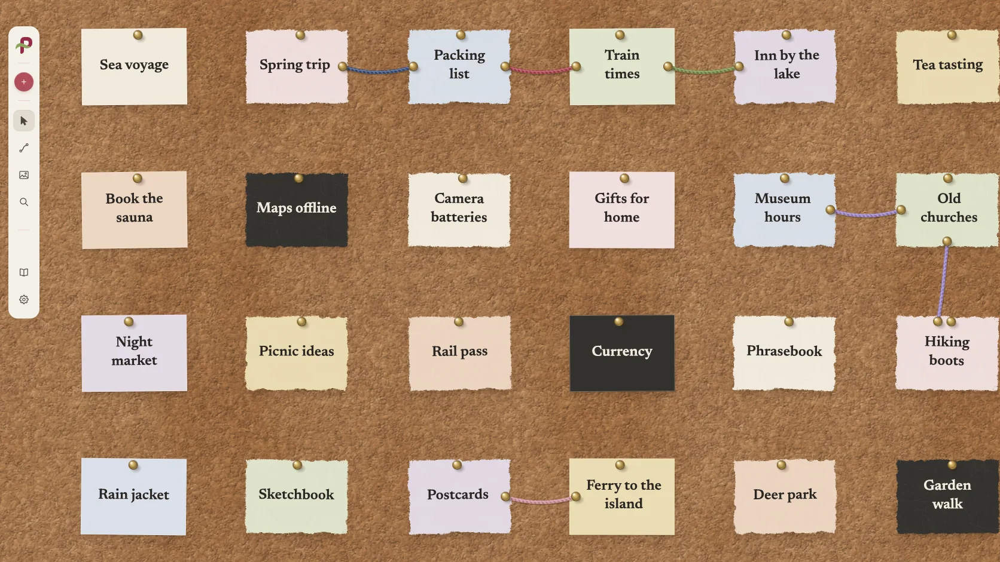
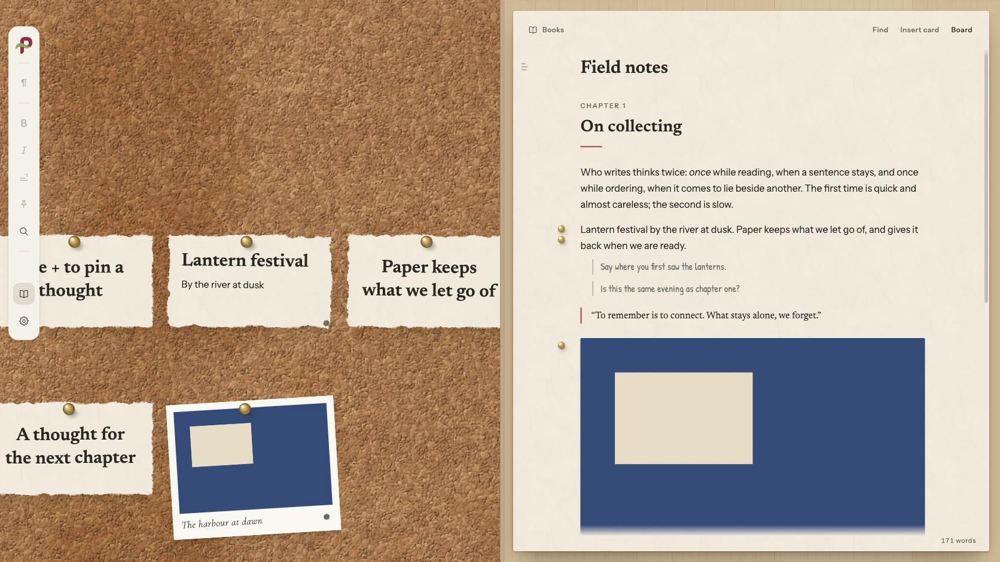
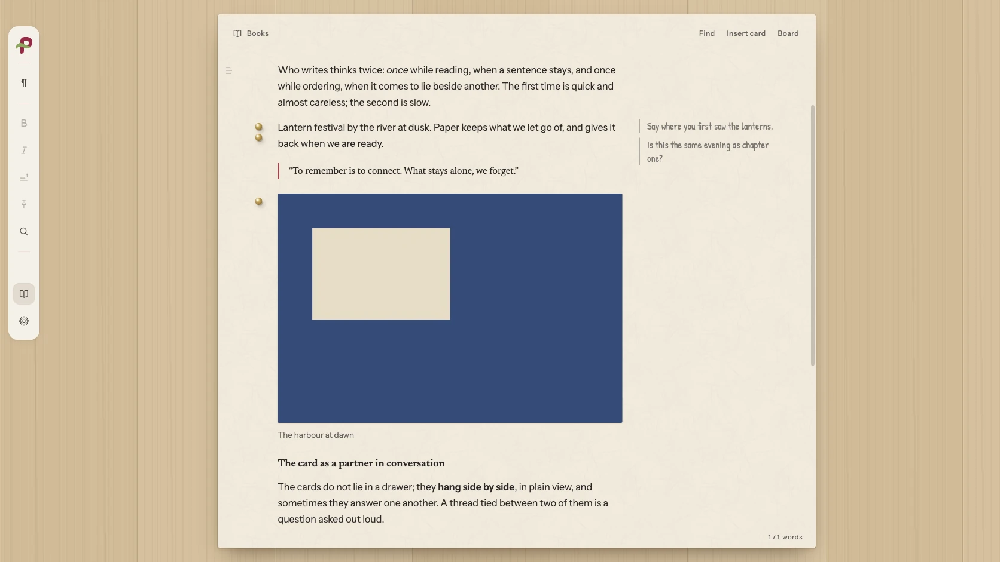
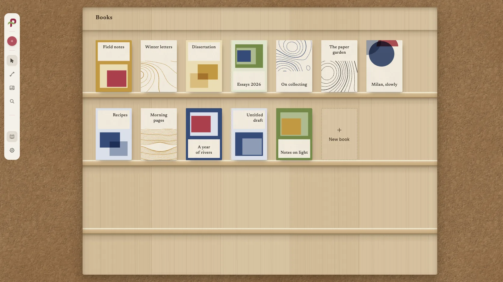

<title>Papertie</title>
<meta name="claude:viewport-fit-sides" content="cover">
<link rel="stylesheet" href="https://fonts.googleapis.com/css2?family=Instrument+Sans:ital,wght@0,400;0,500;0,600;1,400&family=Newsreader:ital,opsz,wght@0,6..72,400;0,6..72,500;0,6..72,600;1,6..72,400&family=Patrick+Hand&display=swap">
<style>
  /* Layout: a cork board opens the page with the promise pinned to it as three notes on one thread;
     below it, sheets of paper on a desk: wide screenshots alternating with short columns of text. */
  :root {
    --desk: #efe6d6;          /* the page: pale oak in daylight */
    --paper: #f8f2e6;         /* sheets laid on it */
    --ink: #2b2724;           /* text */
    --ink-soft: #5d554c;      /* secondary text */
    --rule: #d9cdb8;          /* hairlines and frames */
    --crimson: #a21d45;       /* the mark's P, and the one accent */
    --crimson-ink: #fbf3ea;   /* text on crimson */
    --tie: #6f8f43;           /* the mark's ribbon */
    --cork: #aa7347;          /* behind the cork texture */
    --cork-shade: rgba(60, 34, 14, 0.38);
    --note-cream: #f5eedd;
    --note-rose: #f1dcd9;
    --note-sage: #dfe6cf;
    --note-ink: #2b2724;
    --pencil: #6a6259;
    --code-bg: #f3ead9;
    --shadow: rgba(58, 40, 22, 0.22);
    --font-display: "Newsreader", Georgia, "Times New Roman", serif;
    --font-text: "Instrument Sans", system-ui, -apple-system, "Segoe UI", sans-serif;
    --font-hand: "Patrick Hand", "Segoe Print", "Bradley Hand", system-ui, sans-serif;
    --font-mono: ui-monospace, "SF Mono", Menlo, Consolas, monospace;
    --measure: 34rem;
    --wide: 72rem;
  }
  @media (prefers-color-scheme: dark) {
    :root:not([data-theme="light"]) {
      --desk: #1f1a16; --paper: #2a2420; --ink: #efe6d8; --ink-soft: #b9ad9c; --rule: #4a4037;
      --crimson: #d2456c; --crimson-ink: #1f1a16; --tie: #9dbd68; --cork: #7a5233;
      --cork-shade: rgba(0, 0, 0, 0.5); --note-cream: #efe6d3; --note-rose: #ead3cf; --note-sage: #d6dec4;
      --note-ink: #2b2724; --pencil: #a79c8d; --code-bg: #2f2823; --shadow: rgba(0, 0, 0, 0.5);
      color-scheme: dark;
    }
  }
  :root[data-theme="dark"] {
    --desk: #1f1a16; --paper: #2a2420; --ink: #efe6d8; --ink-soft: #b9ad9c; --rule: #4a4037;
    --crimson: #d2456c; --crimson-ink: #1f1a16; --tie: #9dbd68; --cork: #7a5233;
    --cork-shade: rgba(0, 0, 0, 0.5); --note-cream: #efe6d3; --note-rose: #ead3cf; --note-sage: #d6dec4;
    --note-ink: #2b2724; --pencil: #a79c8d; --code-bg: #2f2823; --shadow: rgba(0, 0, 0, 0.5);
    color-scheme: dark;
  }

  body {
    background: var(--desk);
    color: var(--ink);
    font: 400 1.0625rem/1.6 var(--font-text);
    -webkit-font-smoothing: antialiased;
  }
  a { color: inherit; }
  :focus-visible { outline: 2px solid var(--crimson); outline-offset: 3px; border-radius: 4px; }

  .wrap {
    max-width: var(--wide);
    margin-inline: auto;
    padding-left: max(16px, env(safe-area-inset-left, 0px));
    padding-right: max(16px, env(safe-area-inset-right, 0px));
  }

  /* ── Masthead ─────────────────────────────────────────── */
  .mast { padding-block: 1.1rem; display: flex; align-items: center; gap: 1.5rem; flex-wrap: wrap; }
  .brand { display: flex; align-items: center; gap: 0.6rem; text-decoration: none; margin-right: auto; }
  .brand svg { width: 2rem; height: 2rem; flex: none; }
  .brand span { font: 600 1.45rem/1 var(--font-display); letter-spacing: 0.005em; }
  .mast nav { display: flex; gap: 1.4rem; flex-wrap: wrap; font-size: 0.95rem; }
  .mast nav a { text-decoration: none; color: var(--ink-soft); }
  .mast nav a:hover { color: var(--ink); text-decoration: underline; text-underline-offset: 0.25em; }
  .mark-p { fill: var(--crimson); }
  .mark-tie { fill: var(--tie); }

  /* ── The board ────────────────────────────────────────── */
  .board {
    background: var(--cork) url("img/cork.webp") 0 0 / 512px;
    box-shadow: inset 0 14px 28px -14px var(--cork-shade), inset 0 -14px 28px -14px var(--cork-shade);
  }
  .board .wrap { padding-block: clamp(2.5rem, 7vw, 5rem) clamp(2.25rem, 5vw, 3.75rem); }
  .pinned { display: flex; align-items: flex-start; justify-content: center; }
  .note {
    position: relative;
    flex: 0 1 19rem;
    min-width: 0;
    padding: 2.6rem 1.5rem 1.7rem;
    color: var(--note-ink);
    box-shadow: 0 1px 0 rgba(255, 255, 255, 0.5) inset, 0 10px 18px -8px var(--shadow), 0 2px 3px var(--shadow);
    text-align: center;
  }
  .note h1, .note p { margin: 0; }
  .note .line { font: 600 clamp(1.7rem, 3.1vw, 2.35rem)/1.12 var(--font-display); text-wrap: balance; }
  .note .aside { margin-top: 0.6rem; font: 400 1.05rem/1.35 var(--font-hand); color: #5a524a; }
  .note::before {            /* the brass pin */
    content: "";
    position: absolute; top: 0.85rem; left: 50%;
    width: 0.95rem; height: 0.95rem; margin-left: -0.475rem; border-radius: 50%;
    background: radial-gradient(circle at 35% 30%, #f6e3a4 0 14%, #c9a24a 38%, #8a6a22 78%, #5d4614 100%);
    box-shadow: 1px 3px 3px rgba(40, 24, 8, 0.45);
  }
  .note--cream { background: var(--note-cream); transform: rotate(-1.2deg); }
  .note--rose { background: var(--note-rose); transform: rotate(0.8deg); margin-top: 1.6rem; }
  .note--sage { background: var(--note-sage); transform: rotate(-0.6deg); margin-top: 0.3rem; }
  /* A dog-eared corner, a margin rule and a perforated edge: the app's own note decorations. */
  .note--cream { clip-path: polygon(0 0, calc(100% - 1.6rem) 0, 100% 1.6rem, 100% 100%, 0 100%); }
  .note--cream::after {
    content: ""; position: absolute; top: 0; right: 0; width: 1.6rem; height: 1.6rem;
    background: linear-gradient(225deg, transparent 50%, rgba(120, 100, 70, 0.28) 50%, rgba(255, 255, 255, 0.35) 100%);
  }
  .note--rose { background-image: linear-gradient(90deg, transparent 1.05rem, rgba(162, 29, 69, 0.35) 1.05rem 1.11rem, transparent 1.11rem 1.24rem, rgba(162, 29, 69, 0.35) 1.24rem 1.3rem, transparent 1.3rem); }
  .note--sage { background-image: radial-gradient(circle, rgba(43, 39, 36, 0.14) 1px, transparent 1.4px); background-size: 12px 12px; }
  .yarn { flex: 0 1 7rem; min-width: 2.5rem; align-self: flex-start; margin: 2.1rem -0.9rem 0; position: relative; z-index: 1; }
  .yarn svg { display: block; width: 100%; height: 3.4rem; overflow: visible; }
  .yarn .down { display: none; }
  .yarn path { fill: none; stroke-linecap: round; }
  .yarn .strand { stroke: var(--yarn, #b03a55); stroke-width: 4; }
  .yarn .twist { stroke: rgba(255, 255, 255, 0.35); stroke-width: 1.4; stroke-dasharray: 2 5; }
  .yarn .shade { stroke: rgba(40, 20, 8, 0.3); stroke-width: 5; transform: translateY(3px); filter: blur(1.5px); }
  .yarn--indigo { --yarn: #3f5f97; }

  .pitch { margin: clamp(2rem, 4vw, 3rem) auto 0; max-width: 40rem; text-align: center; }
  /* The pitch on a slip of paper of its own: body text straight on cork does not read. */
  .pitch p {
    margin: 0; padding: 1rem 1.4rem; font-size: 1.12rem; line-height: 1.55;
    background: var(--note-cream); color: var(--note-ink);
    box-shadow: 0 10px 18px -8px var(--shadow), 0 2px 3px var(--shadow);
  }
  .actions { margin-top: 1.5rem; display: flex; gap: 0.9rem; justify-content: center; flex-wrap: wrap; }
  .btn {
    display: inline-block; padding: 0.72rem 1.35rem; border-radius: 999px;
    font: 600 1rem/1.2 var(--font-text); text-decoration: none; text-shadow: none;
  }
  .btn--go { background: var(--crimson); color: var(--crimson-ink); box-shadow: 0 6px 14px -6px rgba(40, 10, 20, 0.6); }
  .btn--go:hover { filter: brightness(1.08); }
  .btn--quiet { background: var(--note-cream); color: var(--note-ink); box-shadow: 0 6px 14px -6px rgba(40, 22, 8, 0.6); }
  .btn--quiet:hover { filter: brightness(0.97); }

  /* ── Sheets on the desk ───────────────────────────────── */
  main { padding-block: clamp(2.5rem, 6vw, 4.5rem); display: grid; gap: clamp(3.5rem, 8vw, 6.5rem); }
  .shot { margin: 0; }
  .shot img {
    display: block; width: 100%; height: auto; border-radius: 10px;
    border: 1px solid var(--rule); box-shadow: 0 24px 48px -28px var(--shadow), 0 2px 6px var(--shadow);
    background: var(--paper);
  }
  .shot figcaption { margin-top: 0.7rem; font: 400 1rem/1.4 var(--font-hand); color: var(--pencil); }

  .spread { display: grid; grid-template-columns: minmax(0, 1fr) minmax(0, 1.55fr); gap: clamp(1.5rem, 4vw, 3.5rem); align-items: center; }
  .spread--flip .words { order: 2; }
  .words { min-width: 0; max-width: var(--measure); }
  .eyebrow { margin: 0 0 0.7rem; font: 600 0.78rem/1 var(--font-text); letter-spacing: 0.14em; text-transform: uppercase; color: var(--crimson); }
  h2 { margin: 0 0 0.9rem; font: 600 clamp(1.8rem, 3.4vw, 2.6rem)/1.1 var(--font-display); text-wrap: balance; }
  .words p { margin: 0 0 0.9rem; color: var(--ink-soft); }
  .words p:last-child { margin-bottom: 0; }
  .words strong { color: var(--ink); font-weight: 600; }

  .opening { display: grid; gap: 1.6rem; }
  .opening .words { max-width: 46rem; }
  .opening h2 { font-size: clamp(2rem, 4vw, 3rem); }

  /* For writers: a plain list, two columns where there is room. */
  .craft { display: grid; gap: 1.6rem; }
  .craft ul { list-style: none; margin: 0; padding: 0; display: grid; grid-template-columns: repeat(auto-fit, minmax(17rem, 1fr)); gap: 1.4rem 2.5rem; }
  .craft li { min-width: 0; padding-top: 1rem; border-top: 1px solid var(--rule); }
  .craft h3 { margin: 0 0 0.3rem; font: 600 1.2rem/1.25 var(--font-display); }
  .craft li p { margin: 0; color: var(--ink-soft); font-size: 1rem; }

  /* Yours: the file itself. */
  .yours { background: var(--paper); border-block: 1px solid var(--rule); }
  .yours .wrap { padding-block: clamp(2.5rem, 6vw, 4.5rem); }
  .yours .spread { align-items: start; }
  .file { min-width: 0; margin: 0; }
  .file .tab { display: inline-block; padding: 0.35rem 0.8rem; border: 1px solid var(--rule); border-bottom: 0; border-radius: 8px 8px 0 0; background: var(--code-bg); font: 500 0.82rem/1.2 var(--font-mono); color: var(--ink-soft); }
  .file pre {
    margin: 0; padding: 1rem 1.1rem; overflow-x: auto; border: 1px solid var(--rule); border-radius: 0 8px 8px 8px;
    background: var(--code-bg); color: var(--ink); font: 400 0.82rem/1.65 var(--font-mono); tab-size: 2;
  }
  .file .k { color: var(--crimson); }
  .file figcaption { margin-top: 0.7rem; font: 400 1rem/1.4 var(--font-hand); color: var(--pencil); }

  /* Download */
  .get { text-align: center; display: grid; gap: 1.2rem; justify-items: center; }
  .get h2 { margin: 0; }
  .get p { margin: 0; color: var(--ink-soft); max-width: 36rem; }
  .platforms { list-style: none; margin: 0.4rem 0 0; padding: 0; display: flex; flex-wrap: wrap; justify-content: center; gap: 0.6rem; font-size: 0.95rem; }
  .platforms li { padding: 0.4rem 0.9rem; border: 1px solid var(--rule); border-radius: 999px; background: var(--paper); color: var(--ink-soft); }
  .small { font-size: 0.92rem; }

  footer { border-top: 1px solid var(--rule); }
  footer .wrap { padding-block: 1.6rem; display: flex; gap: 1rem; flex-wrap: wrap; align-items: center; color: var(--ink-soft); font-size: 0.92rem; }
  footer .brand span { font-size: 1.15rem; }
  footer .brand svg { width: 1.5rem; height: 1.5rem; }

  @media (max-width: 52rem) {
    .pinned { flex-direction: column; align-items: center; }
    .note { flex: none; width: min(100%, 20rem); }
    .note--rose, .note--sage { margin-top: 0; }
    .yarn { flex: none; width: 3.4rem; margin: -0.6rem 0; align-self: center; }
    .yarn svg { height: 3.6rem; }
    .yarn .across { display: none; }
    .yarn .down { display: block; }
    .spread { grid-template-columns: minmax(0, 1fr); }
    .spread--flip .words { order: 0; }
  }
  @media (prefers-reduced-motion: no-preference) {
    .note { transition: transform 0.35s ease; }
    .note:hover { transform: rotate(0deg) translateY(-3px); }
  }
</style>

<header class="wrap mast">
  <a class="brand" href="#top" aria-label="Papertie">
    <svg viewBox="0 0 32 32" aria-hidden="true"><path class="mark-p" d="M10 8C10 4.7 12.7 2 16 2H22C26.4 2 30 5.6 30 10V12C30 14.2 29.2 16.3 27.8 17.9C25.6 20.5 23 21 20.7 21V16C22.5 16 24 14.5 24 12.7V11.3C24 9.5 22.5 8 20.7 8H16V25.7C16 28.1 14.1 30 11.7 30C10.8 30 10 29.2 10 28.4Z"/><path class="mark-tie" d="M2 22.6V19.2C2.9 15.4 6.2 12 10.4 12C13.6 12 17.2 14.6 20.7 16.2C23.3 17.4 25.8 17.9 27.8 17.9C25.6 20.5 23 21 20.7 21C17 21 13.6 18 10.4 18C6.9 18 4.2 20.3 2 22.6Z"/></svg>
    <span>Papertie</span>
  </a>
  <nav aria-label="On this page">
    <a href="#board">The board</a>
    <a href="#book">The book</a>
    <a href="#writers">For writers</a>
    <a href="#yours">Your files</a>
    <a href="#get">Download</a>
  </nav>
</header>

<section class="board" id="top" aria-label="What Papertie is">
  <div class="wrap">
    <div class="pinned">
      <div class="note note--cream">
        <h1 class="line">Pin your thoughts.</h1>
        <p class="aside">one idea, one note</p>
      </div>
      <div class="yarn" aria-hidden="true">
        <svg class="across" viewBox="0 0 120 54" preserveAspectRatio="none"><path class="shade" d="M2 6 C40 46 80 46 118 12"/><path class="strand" d="M2 6 C40 46 80 46 118 12"/><path class="twist" d="M2 6 C40 46 80 46 118 12"/></svg>
        <svg class="down" viewBox="0 0 54 58" preserveAspectRatio="none"><path class="shade" d="M27 2 C40 20 14 38 27 56"/><path class="strand" d="M27 2 C40 20 14 38 27 56"/><path class="twist" d="M27 2 C40 20 14 38 27 56"/></svg>
      </div>
      <div class="note note--rose">
        <p class="line">Tie them together.</p>
        <p class="aside">a thread from this to that</p>
      </div>
      <div class="yarn yarn--indigo" aria-hidden="true">
        <svg class="across" viewBox="0 0 120 54" preserveAspectRatio="none"><path class="shade" d="M2 14 C40 48 80 44 118 4"/><path class="strand" d="M2 14 C40 48 80 44 118 4"/><path class="twist" d="M2 14 C40 48 80 44 118 4"/></svg>
        <svg class="down" viewBox="0 0 54 58" preserveAspectRatio="none"><path class="shade" d="M27 2 C12 20 42 38 27 56"/><path class="strand" d="M27 2 C12 20 42 38 27 56"/><path class="twist" d="M27 2 C12 20 42 38 27 56"/></svg>
      </div>
      <div class="note note--sage">
        <p class="line">Write the book.</p>
        <p class="aside">the notes become pages</p>
      </div>
    </div>
    <div class="pitch">
      <p>Papertie is a cork board and a writing desk in one app. Collect a book's worth of notes, see how they connect, and write the manuscript beside them.</p>
      <div class="actions">
        <a class="btn btn--go" href="#get">Download Papertie</a>
        <a class="btn btn--quiet" href="#board">See how it works</a>
      </div>
    </div>
  </div>
</section>

<main class="wrap">
  <section class="opening" id="board">
    <div class="words">
      <p class="eyebrow">The board</p>
      <h2>A wall for everything you have gathered</h2>
      <p>Every idea, quote and question is a paper note you pin where it belongs. Give it a colour, a rustic or a smooth sheet, a folded corner or a ruled margin. Tie two notes with yarn when one leads to the other, and the argument of your book starts to show.</p>
      <p><strong>One board holds up to 100,000 notes.</strong> Step back to see the whole project, or press ⌘K and type a word to be taken straight to the note you meant.</p>
    </div>
    <figure class="shot">
      
      <figcaption>Notes pinned to the board, with threads between the ones that belong together.</figcaption>
    </figure>
  </section>

  <section class="spread" id="book">
    <div class="words">
      <p class="eyebrow">The book</p>
      <h2>Notes and manuscript, side by side</h2>
      <p>Open a book next to the board and drag a note onto the page. It becomes a paragraph or a quote, and a small pin in the margin remembers which card it came from.</p>
      <p>Point at the pin to see the card again. Click it and the board brings you back to where the thought started. A card that carries a reference brings it along as a footnote.</p>
    </div>
    <figure class="shot">
      
      <figcaption>The board on the left, the chapter on the right. The pins mark passages that began as cards.</figcaption>
    </figure>
  </section>

  <section class="spread spread--flip">
    <div class="words">
      <p class="eyebrow">The page</p>
      <h2>A quiet page, with room in the margin</h2>
      <p>When you write, the tools step aside: a comfortable line length, a serif for your headings, and nothing blinking at you.</p>
      <p>Footnotes sit in the margin beside the line they belong to. So do notes to yourself, in pencil, for the questions you will answer later. Neither one interrupts the paragraph.</p>
    </div>
    <figure class="shot">
      
      <figcaption>Pencilled questions in the margin, next to the paragraph they are about.</figcaption>
    </figure>
  </section>

  <section class="spread">
    <div class="words">
      <p class="eyebrow">The shelf</p>
      <h2>Every book gets a cover of its own</h2>
      <p>Books live on a wooden shelf. Each one is given a cover drawn for it alone, in colour fields, overprinted shapes or contour lines, and it keeps that cover for good.</p>
      <p>Keep a manuscript, a notebook of morning pages and a folder of essays next to each other, all fed by the same board.</p>
    </div>
    <figure class="shot">
      
      <figcaption>Twelve books, twelve covers. No two are alike.</figcaption>
    </figure>
  </section>

  <section class="craft" id="writers">
    <div class="words">
      <p class="eyebrow">For writers</p>
      <h2>Built around how a long piece of writing gets made</h2>
    </div>
    <ul>
      <li><h3>Where a passage came from</h3><p>Each card shows which books it went into, and each paragraph made from a card links back to it.</p></li>
      <li><h3>References that travel</h3><p>Write a source at the foot of a note once. Drop the note into a book and the source becomes the footnote.</p></li>
      <li><h3>Chapters you can move</h3><p>An outline lists your chapters and sections. Reorder them there without cutting and pasting.</p></li>
      <li><h3>Find, in the book and on the board</h3><p>Search a manuscript of 200,000 words, or every note you have ever pinned, as you type.</p></li>
      <li><h3>Export when you are done</h3><p>Word with real footnotes, or Markdown with its images.</p></li>
      <li><h3>An hour-by-hour history</h3><p>Papertie keeps a copy of the board for every hour you worked: all of them for two days, one a day for a month, one a week for about six months.</p></li>
    </ul>
  </section>
</main>

<section class="yours" id="yours">
  <div class="wrap">
    <div class="spread">
      <div class="words">
        <p class="eyebrow">Your files</p>
        <h2>It stays on your computer, in a file you can read</h2>
        <p>There is no account and no cloud. Papertie runs on your machine and saves every change as you make it.</p>
        <p>The board is plain text: one line for each note, thread and paragraph. Open it in any editor, back it up with the tools you already use, or export everything, photos included, as a single <code>.papertie</code> file.</p>
        <p>Nothing you write is sent anywhere.</p>
      </div>
      <figure class="file">
        <span class="tab">board.jsonl</span>
<pre><code>{<span class="k">"type"</span>:"note",<span class="k">"paper"</span>:"cream",<span class="k">"style"</span>:"rustic",
 <span class="k">"text"</span>:"Lantern festival\nBy the river at dusk",
 <span class="k">"ref"</span>:"Field diary, 14 June"}
{<span class="k">"type"</span>:"note",<span class="k">"paper"</span>:"sage",<span class="k">"style"</span>:"smooth",
 <span class="k">"text"</span>:"Paper keeps what we let go of"}
{<span class="k">"type"</span>:"yarn",<span class="k">"color"</span>:"indigo",<span class="k">"noteIds"</span>:["note_…","note_…"]}
{<span class="k">"type"</span>:"book",<span class="k">"title"</span>:"Field notes"}
{<span class="k">"type"</span>:"block",<span class="k">"kind"</span>:"h1",<span class="k">"text"</span>:"On collecting"}</code></pre>
        <figcaption>What the saved board looks like, shortened: ids, positions and dates left out.</figcaption>
      </figure>
    </div>
  </div>
</section>

<section class="wrap" id="get" style="padding-block: clamp(3rem, 7vw, 5.5rem);">
  <div class="get">
    <p class="eyebrow">Download</p>
    <h2>Papertie 0.2</h2>
    <p>An early version for the desktop. Download it, pin your first note, and see whether it suits the way you think.</p>
    <ul class="platforms" aria-label="Available for">
      <li>macOS, Apple silicon</li>
      <li>macOS, Intel</li>
      <li>Windows 10 and 11</li>
      <li>Linux, AppImage and .deb</li>
    </ul>
    <div class="actions">
      <a class="btn btn--go" href="https://github.com/dm807cam/papertie/releases/latest">Get the latest release</a>
    </div>
    <p class="small">The packages are not signed yet, so your system will ask you to confirm the first time you open the app.</p>
  </div>
</section>

<footer>
  <div class="wrap">
    <a class="brand" href="#top" aria-label="Papertie, back to top">
      <svg viewBox="0 0 32 32" aria-hidden="true"><path class="mark-p" d="M10 8C10 4.7 12.7 2 16 2H22C26.4 2 30 5.6 30 10V12C30 14.2 29.2 16.3 27.8 17.9C25.6 20.5 23 21 20.7 21V16C22.5 16 24 14.5 24 12.7V11.3C24 9.5 22.5 8 20.7 8H16V25.7C16 28.1 14.1 30 11.7 30C10.8 30 10 29.2 10 28.4Z"/><path class="mark-tie" d="M2 22.6V19.2C2.9 15.4 6.2 12 10.4 12C13.6 12 17.2 14.6 20.7 16.2C23.3 17.4 25.8 17.9 27.8 17.9C25.6 20.5 23 21 20.7 21C17 21 13.6 18 10.4 18C6.9 18 4.2 20.3 2 22.6Z"/></svg>
      <span>Papertie</span>
    </a>
    <span>Pin your thoughts. Tie them together. Write the book.</span>
  </div>
</footer>
